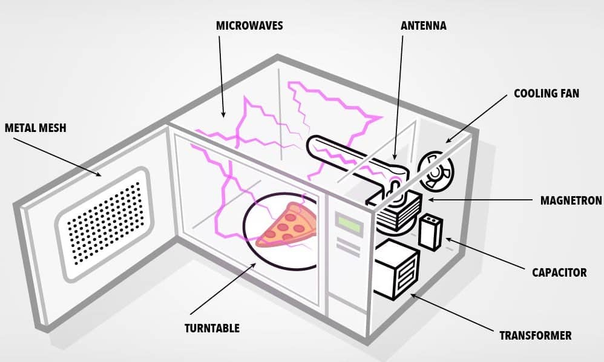
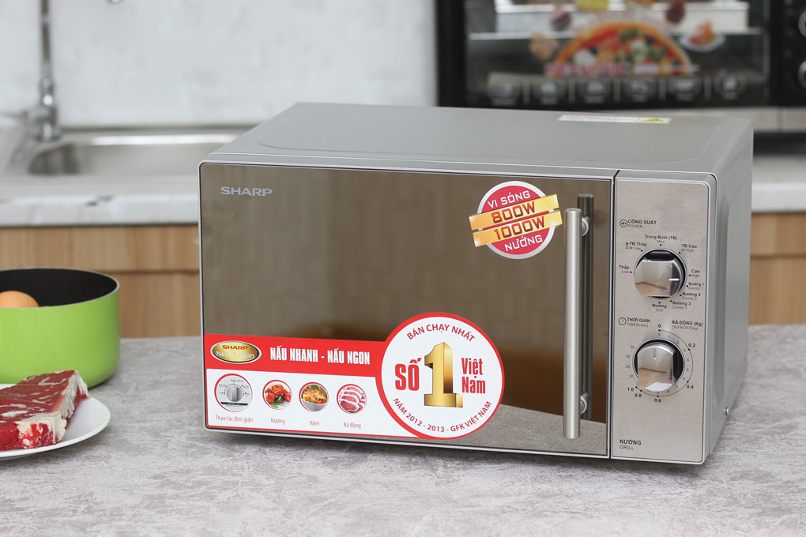

Lò vi sóng hiện đang là thiết bị điện tử được sử dụng phổ biến hiện nay. Tuy nhiên, đây là thiết bị có cấu tạo khá phức tạp, khó sửa chữa và cũng dễ hỏng hóc. Vì thế, trong quá trình sử dụng, khi lò vi sóng bị hỏng, bạn nên lựa chọn các đơn vị sửa chữa uy tín, đáng tin cậy để gửi gắm niềm tin.
Quý khách đang tìm kiếm địa chỉ sửa chữa lò vi sóng tại nhà Hà Nội chuyên nghiệp? Điện Lạnh Bách Khoa cam kết xử lý triệt để mọi sự cố, thay thế linh kiện chính hãng với mức giá minh bạch nhất.
📞 0559763681 - BẤM GỌI NGAY Hoặc Hotline: 0367274152Hiện nay trên thị trường đang có 2 loại lò vi sóng chủ yếu:
Lò vi sóng cơ có cách sử dụng đơn giản với núm xoay để điều chỉnh thời gian và công suất.
Sử dụng bảng điều khiển nút bấm cảm ứng, có hệ thống đèn led hỗ trợ.

Lò vi sóng được chia thành 2 loại chính là lò cơ và lò điện tửHiện nay trên thị trường có rất nhiều thương hiệu lò vi sóng với công dụng và mức giá khác nhau:
Trong quá trình sử dụng, một số sự cố thường gặp có thể kể tới như:

Lò vi sóng là thiết bị tiện lợi nhưng cần được sửa chữa đúng kỹ thuật khi gặp sự cốĐể đảm bảo thiết bị hoạt động ổn định nhất, Điện Lạnh Bách Khoa áp dụng quy trình chuẩn:
Chuyên Nghiệp - Tận Tâm - Có Mặt Sau 20 Phút
HOTLINE: 0559763681